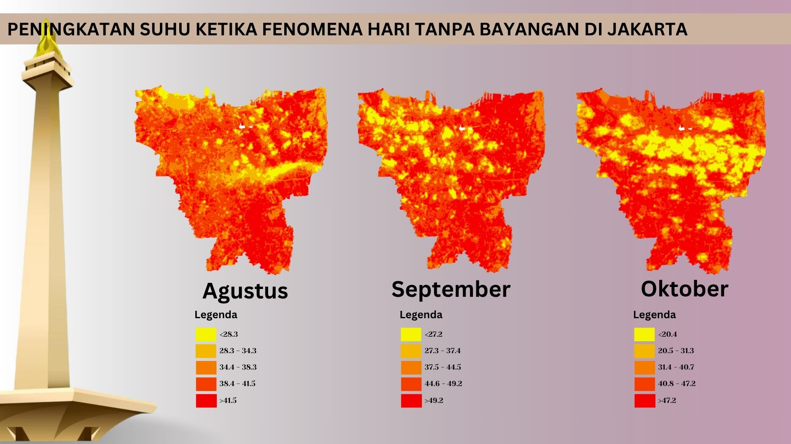

Fenomena Hari Tanpa Bayangan di Jakarta
Terjadi peningkatan suhu udara di Jakarta selama fenomena Hari Tanpa Bayangan.

Sebetulnya, apa itu hari tanpa bayangan? Apakah maksudnya adalah saat tidak ada bayangan sama sekali? Hari tanpa bayangan atau yang kerap disebut sebagai “kulminasi utama” adalah kondisi di mana matahari tepat berada di titik tertinggi langit pada siang hari atau tepatnya di atas kepala (zenith). Posisi tersebut menyebabkan benda-benda di muka bumi yang tegak lurus dengan matahari akan membentuk bayangan terpendek atau bahkan tidak ada sama sekali, dikarenakan letaknya sejajar dengan arah datang sinar matahari. Ketiadaan bayangan tersebut bisa terjadi ketika objek memiliki permukaan bawah yang menempel dengan muka bumi secara keseluruhan. Fenomena ini terjadi karena adanya gerakan semu matahari setiap tahun dari selatan ke utara dan sebaliknya dari utara ke selatan. Matahari akan transit di lokasi sekitar garis khatulistiwa, mengingat Indonesia merupakan salah satu negara yang dilintasi garis khatulistiwa menyebabkan Indonesia tak luput dari fenomena ini. Bahkan wilayah yang berada di koordinat 23,5° LU dan 23,5° LS ini akan mengalami fenomena hari tanpa bayangan sebanyak dua kali dalam setahun.
Jakarta sebagai salah satu provinsi di Indonesia juga turut mengalami fenomena ini, tepatnya pada tanggal 9 Oktober 2024. Dengan melihat fenomena bahwa matahari berada tepat di atas kepala maka mungkin terjadi dinamika perubahan suhu udara, mengingat suhu panas di bumi disebabkan oleh adanya radiasi dari matahari. Ditambah lagi dengan Jakarta yang merupakan wilayah perkotaan yang padat akan lahan terbangun yang cenderung menyerap dan menangkap panas lebih banyak. Di atas merupakan sebaran distribusi suhu udara di Jakarta dan terlihat bahwa terdapat peningkatan suhu udara maksimum di Jakarta.
Estimasi nilai suhu udara ini mengacu pada Land Surface Temperature (LST) atau Suhu Permukaan Daratan yang kemudian dimodelkan menjadi Air Surface Temperature (AST) atau Suhu Udara Permukaan, di mana AST merupakan suhu udara dengan ukuran 1,5 hingga 2 meter di atas muka bumi. Estimasi pengukuran ini menggunakan regresi linear sederhana yang telah diuji coba oleh beberapa penelitian sebelumnya. Persamaan regresi linear yang digunakan adalah y = 0,9756x + 1,7311 dengan akurasi sebesar 0,8534.
Kondisi peningkatan suhu ini diprediksi akan terjadi dalam rentang waktu dua minggu sehingga BMKG menghimbau masyarakat untuk menjaga stamina dan kecukupan cairan tubuh untuk menghindari dehidrasi, kelelahan, dan dampak buruk lainnya.
Sumber
- Detik News, Hari Tanpa Bayangan di Jakarta 8 Oktober 2024, Catat Jadwalnya
- Kompas TV, Ada Hari Tanpa Bayangan Besok 8 Oktober 2024 di Jakarta, Jam Berapa Terjadi
- Kompas.id, Hari Tanpa Bayangan Singgahi Jakarta dan Sekitarnya